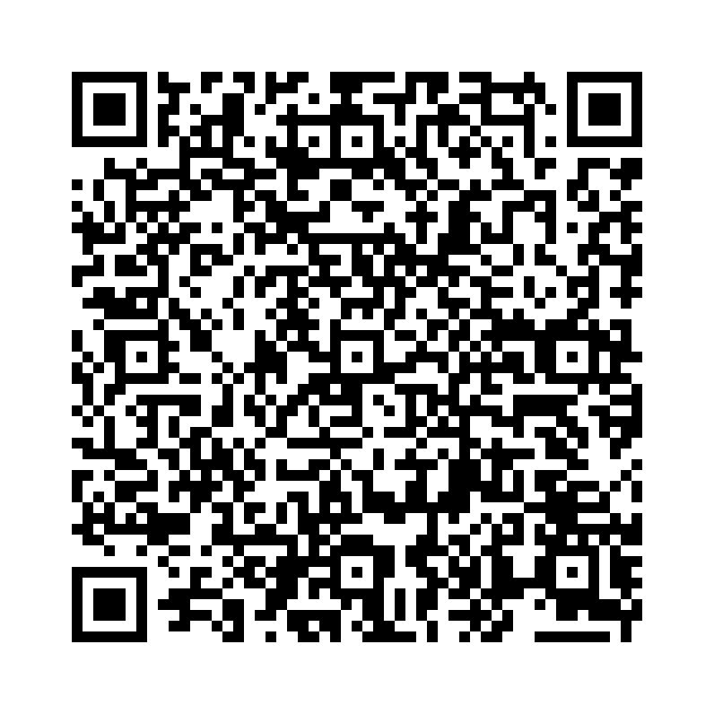

「be」は英語で最も重要な動詞の1つで、「〜です」「〜にいる」「〜になる」などの意味を持ちます。
以下の単語を正しい語順に並べ替えて、正しい英文を作りましょう。

問題 1: (am / a / I / student) - 私は生徒です。
解答: I am a student.
解説: 「I am a student.」は「私は生徒です。」という意味です。
問題 2: (is / my / she / sister) - 彼女は私の妹（姉）です。
解答: She is my sister.
解説: 「She is my sister.」は「彼女は私の妹（姉）です。」という意味です。
問題 3: (we / today / are / happy) - 私たちは今日、幸せです。
解答: We are happy today.
解説: 「We are happy today.」は「私たちは今日、幸せです。」という意味です。
問題 4: (is / in / the / dog / the / garden) - その犬は庭にいます。
解答: The dog is in the garden.
解説: 「The dog is in the garden.」は「その犬は庭にいます。」という意味です。
問題 5: (is / a / good / he / soccer / player) - 彼は上手なサッカー選手です。
解答: He is a good soccer player.
解説: 「He is a good soccer player.」は「彼は上手なサッカー選手です。」という意味です。
問題 6: (you / ready / are / ?) - 準備はできましたか？
解答: Are you ready?
解説: 「Are you ready?」は「準備はできましたか？」という意味です。
問題 7: (book / is / very / this / interesting) - この本はとても面白いです。
解答: This book is very interesting.
解説: 「This book is very interesting.」は「この本はとても面白いです。」という意味です。
問題 8: (is / sunny / it / outside) - 外は晴れています。
解答: It is sunny outside.
解説: 「It is sunny outside.」は「外は晴れています。」という意味です。
問題 9: (want / to / be / I / a / teacher) - 私は先生になりたいです。
解答: I want to be a teacher.
解説: 「I want to be a teacher.」は「私は先生になりたいです。」という意味です。
問題 10: (kind / to / be / others) - 他の人に親切にしましょう。
解答: Be kind to others.
解説: 「Be kind to others.」は「他の人に親切にしましょう。」という意味です。